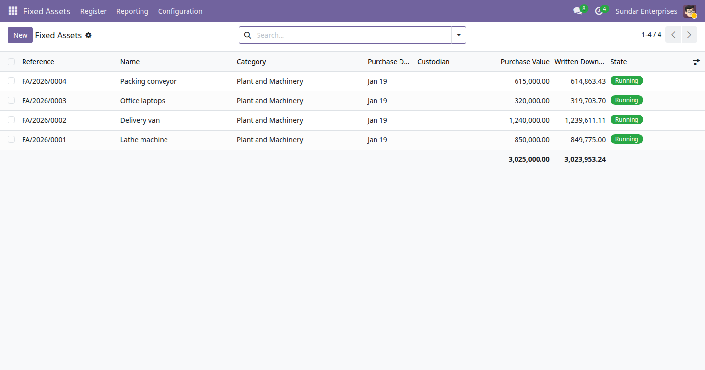

Odoo 19 Community ships no fixed asset register, so most small businesses keep one in a spreadsheet: a list of what the company owns, a straight line calculation, and a written down value at year end for the accountant. This module is that spreadsheet, done properly, inside Odoo. It records the asset, builds the schedule and prints the register as at any date you choose. It does not post to your accounts - the depreciation journal entry stays a manual entry made by whoever closes your books.

The Fixed Assets list: four running assets with their reference, name, category, purchase date, purchase value and written down value, totalling 3,025,000.00 purchased against 3,023,953.24 written down.
Description, an automatic reference from a sequence, category, purchase date and value, salvage value, useful life in years or months, depreciation start date, location, custodian, supplier and the supplier's invoice reference, with a status of draft, in service, disposed or scrapped.
A class of asset holds the useful life, the period and the salvage percentage proposed for new assets. Editing a category never rewrites the schedule of an asset already entered.
Periods are measured in months, so a full year of a leap year is worth exactly one year of depreciation. A mid-year purchase is pro-rated across the first and last periods, and the final period absorbs every rounding remainder so the schedule closes on the salvage value to the cent.
Change the value, the life or the start date and the schedule is rebuilt from scratch. No stale line is left behind. A useful life of zero or less is refused with a message that says why.
Record the date and the proceeds. The schedule stops on that date rather than running on to the end of a life the asset never saw out, and the gain or loss against the written down value is shown for information.
Every asset with its purchase value, accumulated depreciation and written down value as at the date you pick, with totals. The date need not be a period end; the value is pro-rated inside the period it falls in. Filter by category, custodian or status, view it on screen or print the PDF.
E-Way Bill Expiry Watch (India) · Indian Financial Year Numbering · GST Outward and Inward Summary (India) · Rupee Amounts in Words (Lakh and Crore) · Indian Invoice Print Extras · MSME Vendor Payment Tracking (India) · India Partner Identifier Validation · Indian Payroll Components (PF, ESI, PT) · India TDS Rate and Deduction Register · UPI Payment QR on Invoices (India) · Branches (Lite) · Account Budgets (Lite) · Knowledge Base (Lite) · Label Designer (Lite) · Material Request (Lite) · Password Vault (Lite) · Proforma Invoice · Support Tickets (Lite)
Need the full version? The drkds Accounting Pro app adds posted depreciation entries, reducing balance and other methods, revaluation and asset components.
Odoo 19 Community · Licence LGPL-3 · Free and open source
Part of the drkds Indian SME suite for Odoo 19 Community.
Support: jyotinboghani@gmail.com · drkdsinfo.com